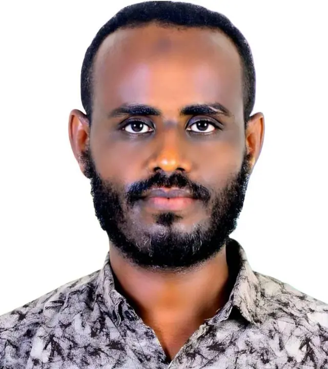

Ahmedhaji Sadik
Afar Region, Samara town, Ethiopia
hajisadik336@gmail.com |
0945033132 |
hajicv.github.io
Professional Summary
Highly experienced professional with a BSc Degree in Nursing and over 10 years of work in nursing management, public health, clinical instruction, curriculum design, and instructional development. Passionate about advancing healthcare quality, strengthening local systems, and empowering communities through health education and leadership.
Education
- BSc in Nursing, Haramaya University, 2008 – 2012
Work Experience
-
Clinical Nurse – Dubti Hospital (2012–2014)
Provided direct nursing care and participated in health education for patients and families.
-
Instructor & Clinical Coordinator – Samara University (2014–2018)
Taught core nursing courses and coordinated clinical training at affiliated health institutions.
-
Coordinator, Curriculum Expert – Samara University (2018–2020)
Led curriculum reviews, instructional material development, and faculty training programs.
-
Health Department Head – Afar Regional Health Bureau (2020–2022)
Oversaw regional health programs, managed staff, budgets, and stakeholder partnerships.
-
Nutrition Focal – Save the Children (2022–2024)
Led regional nutrition programs, supervised CMAM/IMAM implementation, and coordinated with NGOs.
-
Public Health Instructor – Samara University (2024–present)
Teaching, mentoring students, and conducting research in the department of public health.
Additional Training & Certifications
- Curriculum Design - JAPIEGO
- Child Safeguarding - Save the Children
- Adult & Pediatric ART TOT - I-TECH Ethiopia
- IMNCI & ICCM TOT - UNICEF
- Effective Teaching Skills - Tulane University
- Basic R Training organized by Afar PHI RDMC in collaboration with NDMC, held in Semera from July 21–25, 2025